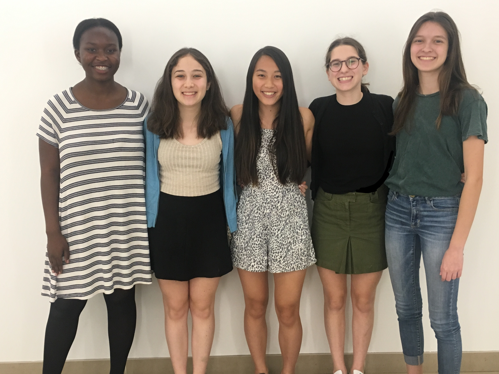

About Say Yes To CS

We are Say Yes To CS! We believe that learning computer science should be accessible to everyone.
After participating in the Girls Who Code Summer Immersion Program, our team decided to create Say Yes To CS to make learning
computer science fun, easy, and approachable. Through interactive tutorials, we
help people understand how to utilize code to create personalized websites and what's going on in the tech world.
Together, we can all Say Yes To CS!
References
“Ada Lovelace.” Eventbrite. www.eventbrite.com/e/ada-lovelace-day-celebration-tickets-28278697345#.
“Bill Gates.” Wellington Oak, wellingtonoak.com/5-billionaires-share-their-secrets-for-financial-domination/.
Brochstein, Michael. "Brooklyn Bridge." Photographing the New York City Skyline. Michael Brochstein, 31 Jan. 2017. Web. 11 Aug. 2017. http://www.michaelbrochstein.com/misc/NYCskylineadvice.htm.
"Dennis Ritchie." Omicrono, 13 Oct. 2016. omicrono.elespanol.com/2016/10/dennis-ritchie/.
"Funny Kittens Cartoon Animal Clip Art." Cat Images, cat-pictures.clipartonline.net/cute-kittens-images-page-2.
"Grace Hopper." Sxates, 1 Aug. 2012, sxates.com/personal/sexism-in-silicon-valley/.
"Jeff Bezos." Tino Share, tinoshare.com/10-teachings-of-jeff-bezo/.
"Katherine Johnson Sits at Her Desk with a Globe." NASA, 4 Aug. 2017, www.nasa.gov/feature/katherine-johnson-the-girl-who-loved-to-count.
Krasovskiy, Sergey. "Dinosaur Picture." BBC News, BBC, 5 May 2017, www.bbc.co.uk/newsround/39817900.
"Mark Zuckerberg." Esquire, www.esquirelat.com/mundo-esquire/15/12/1/mark-zuckerberg-facebook-max-donacion-45-mi-millones/.
Nogi, Kazuhiro. "Masako Wakamiya." Sud Quest, www.sudouest.fr/2017/08/07/au-japon-developper-des-applis-meme-a-82-ans-ca-s-apprend-3676654-4725.php.
NYC Skyline. Youtube. Best Hotel, 16 July 2015. Web. 10 Aug. 2017. https://www.youtube.com/watch?v=Fl7V5dX5IrM.
Shapouri, Beth. "Marie Claire." Marie Claire, Marie Claire for Activia, 10 July 2017, www.marieclaire.com/career-advice/a26280/reshma-saujani-work-life-balance/.
"Steve Jobs." IClub, 9 Jan. 2017, iclub.pt/foi-ha-10-anos-que-steve-jobs-apresentou-ao-mundo-o-iphone/.